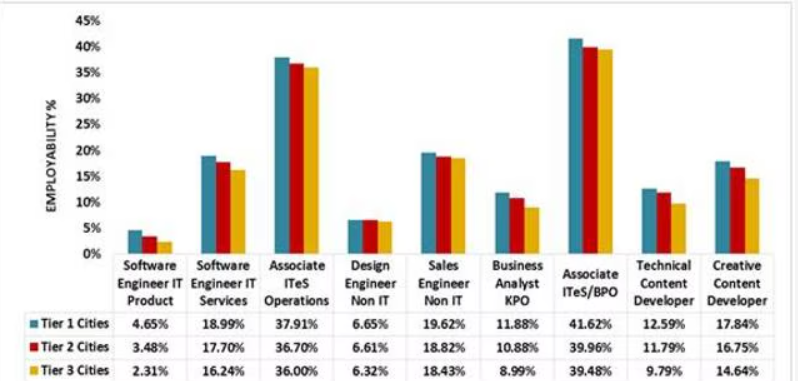

Choosing the right career is one of the most important decisions of your life. Yet most students make this decision under pressure — without proper guidance, without understanding their strengths, and without knowing what the industry actually demands. CareerCompass by Vyntrix is here to change that. We help students discover the right path — based on their interests, skills, and goals — not just marks and family pressure. Your future starts with one right decision. Let us help you make it.
This platform is built by Aryan Ganjre — a self-taught developer and founder of Vyntrix. Currently learning Full Stack Development and AI/ML — building real tools to solve real problems for Indian students. CareerCompass is one such tool — designed to give every student the guidance they deserve

| career Field | Best For | Top Courses | Average Salary |
|---|---|---|---|
| Software Engineering | Technology lovers | Btech CSe, BCA | 8-40 LPA |
| Medicine | Science students | MBBS, BDS | 10-50 LPA |
| Business & Finance | Commerce students | BBA, MBA, CA | 6-30 LPA |
| Law | Logical thinkers | LLB, BA LLB | 5-25 LPA |
| Design & Arts | Creative minds | BDes, BFA | 4-20 LPA |